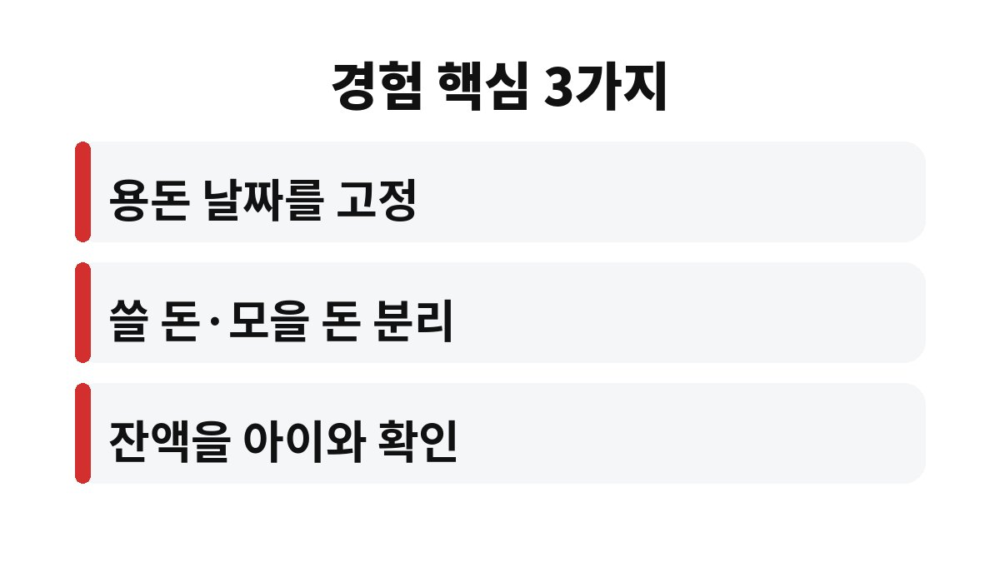
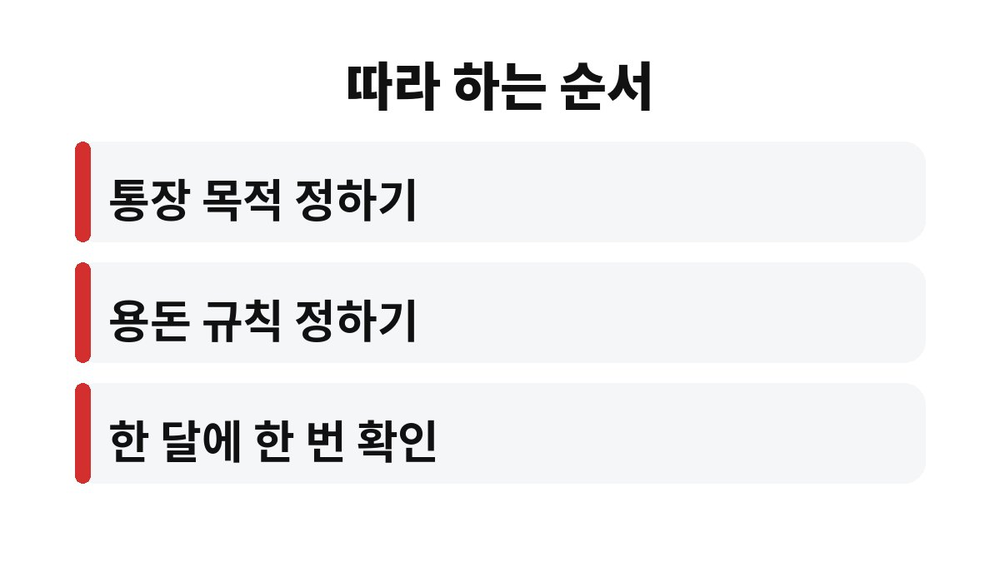

이 글은 아이에게 첫 통장을 만들어 주고 싶지만 용돈을 얼마나, 어떤 규칙으로 줘야 할지 막막한 부모를 위해 쓴 글입니다.
온라인 쇼핑몰을 운영하며 아이를 키우는 가장으로서 아이 용돈 통장을 시작하며 정한 규칙을 정리했습니다.
금액보다 규칙을 먼저 정하는 쪽이 오래 간다는 것이 제가 얻은 결론입니다.
아이가 달라고 할 때마다 용돈을 주는 방식은 편하지만 기준이 없습니다.
아이는 돈이 어떻게 모이고 쓰이는지 배우지 못하고, 부모는 한 달에 얼마를 줬는지 기억하지 못합니다.
사업 때문에 바쁠 때는 그때그때 건네는 돈이 오히려 늘어나기도 합니다.
용돈 기준이 없으면 아이에게도 돈을 쓰는 이유와 모으는 이유가 남지 않습니다.
저도 바쁘다는 이유로 현금 몇 장을 쥐여 주는 방식에 오래 머물렀습니다.
어느 날 아이가 받은 돈을 어디에 썼는지 스스로 설명하지 못하는 모습을 보고 방식을 바꾸기로 했습니다.
돈을 주는 일이 아니라 돈을 다루는 연습을 시켜 주는 일이 부모의 몫이라고 생각하게 되었습니다.
그래서 금액을 올리기 전에 먼저 받는 방식부터 바꾸는 쪽으로 방향을 잡았습니다.
먼저 용돈을 주는 날을 매주 같은 요일로 고정했습니다.
요일을 고정하자 아이도 그날을 기다리며 다음 주 계획을 세우기 시작했습니다.
그리고 받은 돈을 쓸 돈과 모을 돈으로 나누는 규칙을 아이와 함께 정했습니다.
아래 표가 제가 정한 기준입니다.

| 항목 | 정한 방식 | 이유 |
|---|---|---|
| 주는 날 | 매주 같은 요일 | 기다리는 법을 익히기 위해 |
| 나누는 방식 | 쓸 돈과 모을 돈으로 분리 | 쓰기만 하지 않는 습관 |
| 확인하는 날 | 한 달에 한 번 잔액 보기 | 모인 돈을 눈으로 확인 |
이 표는 저희 집 기준이며 아이 나이에 따라 달라질 수 있습니다.
용돈 통장을 만들 때 가장 걱정되었던 것이 증여세였습니다.
제가 확인한 바로는 2026년 기준으로 부모가 미성년 자녀에게 증여할 때 10년간 2천만 원까지 증여재산공제가 적용됩니다.
생활비와 교육비로 쓰는 통상적인 용돈은 증여세 대상으로 보지 않지만, 모아서 저축이나 투자로 이어지면 증여로 볼 수 있다고 안내됩니다.
그래서 저는 아이 통장에 들어가는 돈의 흐름을 기록해 두고, 금액이 커지기 전에 세무서나 전문가와 확인하기로 했습니다.
정확한 적용 기준은 계좌 입금 방식과 가족 상황에 따라 달라질 수 있습니다.
통장을 만든 뒤 아이가 이번 달에 얼마를 모았는지 먼저 말하기 시작했습니다.
갖고 싶은 물건이 생기면 며칠 치 용돈이 필요한지 스스로 계산해 보는 모습도 보였습니다.
부모 입장에서도 달라는 대로 주는 부담이 사라져 가계 계획을 세우기 쉬워졌습니다.
무엇보다 돈 이야기를 집에서 자연스럽게 나눌 수 있게 된 점이 가장 컸습니다.
아이가 세뱃돈이나 선물로 받은 돈도 같은 통장에서 함께 보게 되어 관리가 단순해졌습니다.
남은 잔액이 늘어나는 모습을 눈으로 보며 아이가 성취감을 느끼는 듯했습니다.

1. 아이 통장을 만드는 목적을 먼저 정합니다.
2. 은행에 미리 문의해 미성년자 통장 개설에 필요한 서류를 확인합니다.
3. 용돈을 주는 요일과 금액을 아이와 함께 정합니다.
4. 받은 돈을 쓸 돈과 모을 돈으로 나누는 규칙을 적어 둡니다.
5. 한 달에 한 번 아이와 잔액을 같이 확인하고 입금 내역을 기록합니다.
함께 읽으면 좋은 글: 고정비 줄이는 법, 매달 새던 돈을 몰라 답답하던 외벌이 가장이 점검한 3갈래 5단계
아이 용돈 통장의 핵심은 금액이 아니라 정해 둔 규칙을 꾸준히 지키는 것입니다.
이번 주말에 아이와 함께 용돈을 주는 요일부터 정해 보시기 바랍니다.
증여와 세금 문제는 가족 상황에 따라 달라지므로 필요하면 전문가와 확인하시길 바랍니다.
처음부터 완벽한 규칙을 만들기보다 한두 달 운영하며 고쳐 가는 것이 좋다고 생각합니다.
용돈을 주는 목적은 아이가 스스로 선택하고 책임지는 경험을 쌓게 하는 것입니다.
규칙을 바꿀 때에도 아이와 함께 이야기하면 받아들이는 태도가 달라집니다.
※ 본 글은 2026년 기준 개인 경험을 바탕으로 한 정보이며, 세금·금융 상품 선택은 본인 상황에 맞게 전문가와 확인하시길 바랍니다.